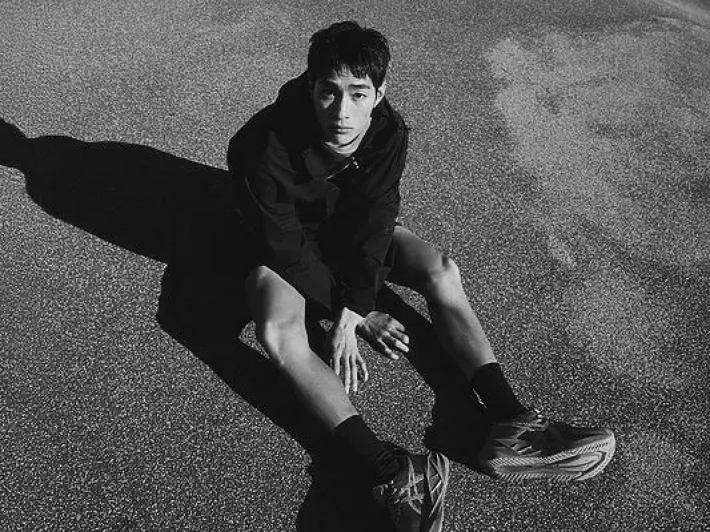

Daily Alpha | 홍태준
2025.1.20 | Interviewed by who
It's Taejun Hong, the model.
Please enjoy it.

It's Taejun Hong, the model.
Please enjoy it.
Q0. 안녕하세요, Daily Alpha의 첫 알파메일 인터뷰에 응해주셔서 감사합니다. 자기소개 부탁드릴게요.
A0. 안녕하세요, 저는 홍태준입니다. Daily Alpha를 사랑하시는 여러분 반갑습니다.
Q1. 모델을 시작한 계기는 무엇인가요?
A1. 모델을 시작한 계기는 친구들이 사진을 찍어주면서 자연스럽게 관심을 가지게 되었고,
카메라 앞에서 다양한 모습으로 변할 수 있다는 점이 매력적이었어요.
Q2. 자신의 외모에서 가장 마음에 드는 부분은 어디인가요?
A2. 큰 눈과 진한 눈썹, 그리고 얼굴에 있는 점이 가장 마음에 들어요.
특히 점은 모델 활동을 하면서 특별한 트레이드 마크가 되었죠.
Q3. 모델로서 가장 중요하게 생각하는 점은 무엇인가요?
A3. 항상 최상의 컨디션을 유지하는 것이 중요하다고 생각해요. 세안이나 입술 보습처럼 세심한 관리가 필요하죠.
Q4. 운동과 식단 관리는 어떻게 하고 있나요?
A4. 운동은 주로 복싱을 하며, 두 끼 일반식을 먹고 운동으로 칼로리를 소모해요.
또한, 비수기에는 공복을 길게 유지한 뒤 유산소 운동을 합니다.
Q5. 쉬는 날은 어떻게 보내나요?
A5. 친구들과 카페에서 수다를 떨고, 운동하는 것이 평소 쉬는 날의 루틴이에요. 피부 관리도 중요해서 화이트 태닝도 받는 편이에요.
Q6. 모델 말고 이루고 싶은 꿈이 있나요?
A6. 제 공간을 갖는 것이 꿈이에요. 상업 공간이든 개인 공간이든 자신만의 공간을 만들어 보고 싶어요.
Q7. 처음 촬영한 기억이 어떤가요?
A7. 처음 촬영은 길거리에서 외국 포토그래퍼에게 사진을 요청받았을 때였어요.
그때는 당황했지만 기분이 좋았죠. 표정이 어색한 사진이 더 기억에 남아요.
Q8. 가장 좋아하는 브랜드나 아이템은 무엇인가요?
A8. 이세이미야케 백팩을 좋아하고, 빈티지 제품을 아카이빙하는 걸 즐깁니다. 이 브랜드의 제품은 특별한 매력이 있어요.
Q9. 모델로서 자신만의 스타일은 무엇인가요?
A9. 모델은 비주얼만큼 개성도 중요하다고 생각해요. 제 스타일은 꾸준히 자신을 표현하고, 노력하는 것에서 차별화된다고 봅니다.
Q10. 해외 활동을 위해 준비하고 있는 것이 있나요?
A10. 외국어 공부를 열심히 하고 있어요. 해외 활동을 통해 더 자신감을 얻고, 미래에 긍정적인 영향을 미칠 거라고 믿어요.
@daily Alpha